정보통신산업기사 (2013-03-17 기출문제)
1과목: 디지털전자회로
1. 단상 반파 정류회로의 맥동률은 얼마인가?
- 0.48
- 1
- 1.21
- 0.5
(정답률: 80%)

2. 다음 중 직류 전원회로의 구성 순서로 옳은 것은?
- 정류회로→변압회로→평활회로→정전압회로
- 변압회로→정류회로→평활회로→정전압회로
- 변압회로→평활회로→정류회로→정전압회로
- 변압회로→정류회로→정전압회로→평활회로
(정답률: 84%)
3. 제너다이오드에서 불순물의 도핑 레벨을 높게 했을 때 나타나는 현상으로 틀린 것은?
- 역방향 제너전압이 감소한다.
- 매우 좁은 공핍충이 형성된다.
- 강한 전계가 공핍층 내부에 존재하게 된다.
- 역방향 제너저항이 감소한다.
(정답률: 69%)
4. 이상적인 연산증폭기(OP AMP)의 특징으로 옳은 것은?
- 전압이득이 적다.
- 출력 임피던스가 높다.
- 오프셋이 “1”이다.
- 통과 주파수대역이 무한대이다.
(정답률: 63%)
5. 다음 회로에 대하여 입력신호 Vin=5sin(ωt)일 때 출력파형은? (단, 제너다이오드의 순방향 전압은 0.7[V]이고, 제너전압은 4.7[V]이다.)
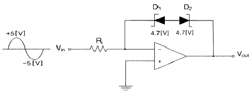
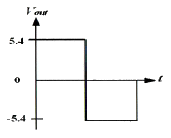
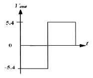
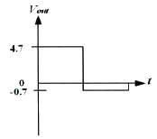
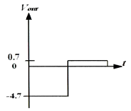
(정답률: 68%)
6. 다음의 연산증폭기에서 V1=5[V], V2=2[V], V3=3[V]일 때 출력전압 Vo는?
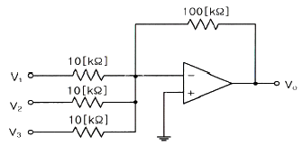
- -100[V]
- 100[V]
- 155[V]
- -155[V]
(정답률: 72%)
7. B급 전력증폭기의 최대효율을 백분율로 표시하면 어떻게 되는가?
- 25[%]
- 48.5[%]
- 78.5[%]
- 98.5[%]
(정답률: 84%)
8. 하틀레이(Hartley) 발진 회로의 발진 조건(L분할형)은?
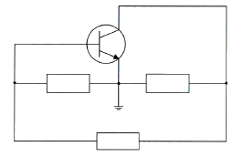
- B-E 사이 : 유도성, E-C 사이 : 유도성, B-C 사이 : 용량성
- B-E 사이 : 용량성, E-C 사이 : 유도성, B-C 사이 : 유도성
- B-E 사이 : 유도성, E-C 사이 : 용량성, B-C 사이 : 유도성
- B-E 사이 : 용량성, E-C 사이 : 유도성, B-C 사이 : 용량성
(정답률: 76%)
9. 다음 발진기 중 정현파 발진기에 속하는 것은?
- 하틀레이 발진기
- 멀티 바이브레이터
- 블로킹 발진기
- 톱니파 발진기
(정답률: 66%)
10. 다음 중 정보 전송시 대역폭 효율(bps/Hz)이 가장 우수한 변조 방식은?
- 4PSK
- FSK
- ASK
- 16QAM
(정답률: 86%)
11. 주파수변조에서 반송파의 전력이 10[W], 최대주파수편이 ⊿f=5[kHz] 신호파의 주파수 fs=1[kHz]인 경우 변조지수 mf는?
- 3
- 4
- 5
- 6
(정답률: 75%)
12. 다음 중 그림과 같은 회로의 명칭으로 적합한 것은?
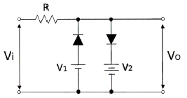
- Rectifier Circuit
- Clamping Circuit
- Slicer Circuit
- Amplifier Circuit
(정답률: 74%)
13. 다음 그림과 같은 A의 정현파 파형을 기준 레벨을 중심으로 B와 같은 디지털 신호로 바꾸고자 하는 경우에 사용되는 회로는 무엇인가?
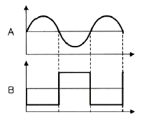
- 다이오드 펌핑 회로
- 슈미트 트리거 회로
- 단안정 발생 회로
- 블록킹 발진 회로
(정답률: 84%)
14. 다음에 열거하는 회로 중에서 일반적으로 플립플롭을 이용하여 구성하는 회로가 아닌 것은?
- 시프트 레지스터
- 카운터
- 분주기
- 전가산기
(정답률: 64%)
15. 다음 불 대수의 정리와 관련 있는 것은?
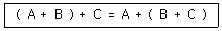
- 교환법칙
- 결합법칙
- 분배법칙
- 부정법칙
(정답률: 81%)
16. 에지 트리거 J-K 플리플롭의 논리기호로 옳은 것은?
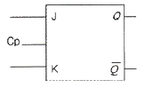
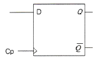
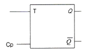
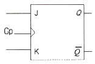
(정답률: 84%)
17. 다음 디지털 IC의 종류 중 Fan-out이 큰 순서로서 옳은 것은?
- TTL ＞ RTL ＞ DTL ＞ C-MOS
- C-MOS ＞ TTL ＞ RTL ＞ DTL
- TTL ＞ C-MOS ＞ RTL ＞ DTL
- C-MOS ＞ TTL ＞ DTL ＞ RTL
(정답률: 76%)
18. 다음 회로도의 명칭으로 옳은 것은?
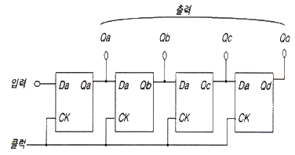
- 병렬입력-직렬출력 시프트레지스터
- 병렬입력-병렬출력 시프트레지스터
- 직렬입력-직렬출력 시프트레지스터
- 직렬입력-병렬출력 시프트레지스터
(정답률: 71%)
19. 4비트 5진 계수기의 상태를 올바르게 나타낸 것은?
- 0000 → 0001 → 0010 → 0011 → 0100 → 0000
- 0000 → 0001 → 0010 → 0100 → 1000 → 1001
- 0001 → 0010 → 0011 → 0100 → 0101 → 0000
- 0001 → 0010 → 0100 → 1000 → 1001 → 0000
(정답률: 83%)
20. 다음의 수행 내용은 메모리 쓰기 동작시 MAR(Memory Address Register)와 MBR(Memory Buffer Register)에 대한 순서를 나타내고 있다. 올바른 순서는 어느 것인가?
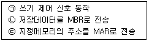
- ㉠ → ㉡ → ㉢
- ㉠ → ㉢ → ㉡
- ㉡ → ㉠ → ㉢
- ㉢ → ㉡ → ㉠
(정답률: 65%)
2과목: 정보통신기기
21. DTE와 DCE를 상호 연결하기 위해 기계적, 전기적, 기능적, 절차적인 조건들을 표준화한 것은?
- 토폴로지
- DCE 아키텍처
- DTE/DCE 인터페이스
- 참조 모형
(정답률: 92%)
22. 다음 중 정보 단말기의 입ㆍ출력 기능에 속하는 것은?
- 입력 변환 기능
- 입ㆍ출력 제어 기능
- 에러 제어 기능
- 송ㆍ수신 제어 기능
(정답률: 73%)
23. 정보 단말기 중 회선 접속부의 기능이 아닌 것은?
- 병렬 Data를 직렬로 변환 기능
- 2진 비트열로 변환 기능
- 직렬 Data를 병렬로 변환 기능
- 전송제어문자나 부호의 식별 기능
(정답률: 83%)
24. 모뎀의 기능 중에서 디지털 신호가 "1"이나 "0"이 계속되는 것을 방지하는 것은?
- 스크램블 기능
- Timing 기능
- 등화 기능
- 테스트 기능
(정답률: 92%)
25. 다음 중 전손시스템에서 다중화(Multiplexing)이란 무엇인가?
- 다중신호를 다중 통신채널에 보내는 것
- 다중신호를 하나의 통신채널에 보내는 것
- 동일신호를 다중 통신신호로 보내는 것
- 동일신호를 하나의 통신채널에 보내는 것
(정답률: 82%)
26. 네트워크 장비 더미(dummy) 허브에 대한 설명으로 옳지 않은 것은?
- 각 포트마다 부여된 MAC 주소가 없다.
- 노드들은 주로 UTP 케이블을 통해 연결된다.
- 단순히 신호분배 기능을 한다.
- OSI 계층의 데이터링크 계층에서 동작한다.
(정답률: 70%)
27. 광섬유를 전송매체로 100[Mbps]의 전송속도를 제공하는 두 개의 링 구조로 이루어진 것은?
- ADSL
- HDSL
- VDSL
- FDDI
(정답률: 79%)
28. 컴퓨터나 단말기에서 필요로 하는 디지털 신호를 아날로그 전송로의 특성에 맞게 신호를 변환시키는 통신 장치는?
- MODEM
- DTE
- TDM
- OMR
(정답률: 90%)
29. 인터네트워킹(Internetworking) 장비 중 경로 설정 기능을 가진 것은?
- Bridge
- Modem
- Repeater
- Router
(정답률: 89%)
30. 다음 중 IPTV의 특성에 대한 설명으로 옳지 않은 것은?
- IPTV 시스템의 양방향성은 서비스 제공자가 많은 상호작용 TV의 응용을 제공할 수 있다.
- 디지털 녹화기와 결합된 IPTV는 프로그램 콘텐츠의 타임시프팅(Time shifting)을 허용한다.
- 서비스 제공자가 요청한 채널만 전송하므로 네트워크상의 대역폭을 절약할 수 있다.
- 실시간 채널이나 UHDTV 등의 초고화질 프로그램이 늘어나더라도 고스트 현상이나 끊김 현상은 발생하지 않는다.
(정답률: 76%)
31. 다음 중 화상응답 시스템(VRS)의 특징에 대한 설명으로 옳지 않은 것은?
- 동영상이 아닌 그림과 문자만을 서비스한다.
- 센터와 단말장치 사이에 광대역의 전송로를 사용한다.
- 화면정지, 다시보기, 앞으로 가기, 뒤로 가기 등 자유자재로 다양한 화면상태의 표현이 가능하다.
- 방송정보와 같이 단방향이 아닌 양방향 정보를 제공한다.
(정답률: 86%)
32. CATV 방송에서 입력측 (C/Ni)=20이고, 출력측 (C/No)=10이라고 가장하면 잡음지수(Noise Factor)는?
- 0.5
- 1
- 2
- 3
(정답률: 81%)
33. 다음 중 VoIP 서비스에 대한 설명으로 잘못된 것은?
- 음성과 데이터를 하나의 망으로 전송
- IP(인터넷프로토콜)과 연계되어 다양한 부가서비스 제공가능
- 기존의 데이터망을 이용하므로 저렴한 통화요금 부과
- 각 통화는 라인을 독점으로 점유하여 대역폭 사용이 비효율적
(정답률: 85%)
34. 위성통신을 위한 최적의 주파수 대역으로 전파의 창(Radio Window)이라 불리우는 주파수 대역은?
- 1~10[kHz]
- 1~10[MHz]
- 1~10[GHz]
- 1~10[THz]
(정답률: 79%)
35. 지구와 정지위성까지의 거리가 약 36,000[km] 라고 할 때 지구에서 발사한 전파가 위성에서 중계되어 지구까지 돌아오는 시간은 대략 얼마인가? (단, 위성 중계기 내에서의 지연시간은 무시한다.)
- 120[ms]
- 360[ms]
- 240[ms]
- 180[ms]
(정답률: 78%)
36. 다음 중 위성통신에 있어서 CDMA의 특징으로 옳지 않은 것은?
- 전파의 간섭, 혼신에 강하고 광대역 전송로가 필요하다.
- 통신 보안성이 약하고 지구국의 수를 많이 할 수 있다.
- 주파수 이용 효율이 높다.
- 대역확산 개념을 이용하여 복수개의 지구국이 위성 중계기를 공유하는 방식이다.
(정답률: 80%)
37. 다음 중 위성을 이용한 위치, 속도 및 시간 측정 서비스를 제공하는 시스템은?
- DBS(Direct Broadcasting System)
- GPS(Global Positioning System)
- TRS(Trunked Radio System)
- VRS(Video Response System)
(정답률: 91%)
38. 3DTV의 안경식 디스플레이 종류가 아닌 것은?
- 편광 방식
- 셔터글라스 방식
- 광학입체 방식
- 렌티큘라 방식
(정답률: 79%)
39. 다음 중 음악 압축에 사용되는 것으로 CD 수준의 음질로 압축하는 표준은?
- JPEG
- MPEG-2
- MP3
- MPEG-4
(정답률: 88%)
40. 다음 중 멀티미디어 단말기의 구성 요소가 아닌 것은?
- 처리장치
- 저장장치
- 미디어 입출력장치
- 신호 변환장치
(정답률: 81%)
3과목: 정보전송개론
41. 표본화 주파수가 10[kHz]이고 원신호 파형의 주파수가 1[kHz]라면, 1주기당 PAM 신호는 몇 개인가?
- 1개
- 2개
- 5개
- 10개
(정답률: 78%)
42. 채널 대역폭이 150[kHz]이고 S/N이 15일 때 채널용량은 얼마인가?
- 150[kbps]
- 300[kbps]
- 450[kbps]
- 600[kbps]
(정답률: 75%)
43. WDM에서 사용되는 레이저(Laser) 광의 특징이 아닌 것은?
- 고휘도(高輝度)
- 지향성(指向性)
- 열광(熱光)
- 편광현상(偏光現像)
(정답률: 81%)
44. 다음 중 다원접속방식에서 이동통신 가입자 수용 용량이 가장 많은 것은?
- FDMA
- SDMA
- CDMA
- TDMA
(정답률: 81%)
45. 다음 광섬유 케이블 접속 중에서 커넥터 다중접속이 용이한 것은?
- 리본형
- 스트랜드형
- 슬롯트형
- 단일 유니트형
(정답률: 79%)
46. 어떤 신호가 전송매체상의 A지점과 B지점 구간에서 전송되는 경우, 전력레벨이 1/2로 감소하였다면, A-B 구간에서 발생하는 손실은 약 얼마인가?
- 1[dB]
- 2[dB]
- 3[dB]
- 4[dB]
(정답률: 71%)
47. 광섬유에서의 신호원은 무엇인가?
- 빛
- 무선파
- 적외선
- 초단파
(정답률: 87%)
48. 다음 중 대역확산 방식의 장점이 아닌 것은?
- 방해파 억압
- 에너지 밀도 증가
- 비화특성 우수
- 다중 액세스
(정답률: 78%)
49. 다음 중 동기식 전송방식에 속하지 않는 것은?
- 비트 동기방식
- 문자 동기방식
- 스트로보 동기방식
- 프레임 동기방식
(정답률: 79%)
50. 통화로 신호방식(Channel Associated Signaling)에서 1개 또는 다수의 신호주파수를 음성주파수 대역 내에 두는 방식으로 주파수 이용효율은 좋은 반면 통신신호와의 간섭에 대한 처리가 필요한 방식은?
- 직류방식
- In-band 방식
- out-of band 방식
- 혼합방식
(정답률: 69%)
51. 일반적으로 비동기식 전송보다 빠르고 동기식 전송보다 느린 방식은?
- 비트방식
- 문자방식
- 혼합형 동기식 방식
- 비혼합형 동기식 방식
(정답률: 87%)
52. 데이터를 변조하지 않은 상태, 즉 직류펄스의 형태 그대로 전송하는 방식으로 RZ, NRZ, AMI(Bipolar), Manchester, CMI 등의 방식이 사용되는 전송방식은?
- 동기식(Synchronous) 전송방식
- 비동기식(Asynchronous) 전송방식
- 기저대역(Baseband) 전송방식
- 반송대역(Broadband) 전송방식
(정답률: 82%)
53. 다음 중 비트방식의 데이터링크 프로토콜이 아닌 것은?
- SDLC
- HDLC
- BSC
- LAP-B
(정답률: 78%)
54. FTP(File Transfer Protocols)는 OSI 7 계층 중 어느 계층에 속하는가?
- 데이터링크 계층
- 네트워크 계층
- 세션 계층
- 응용 계층
(정답률: 69%)
55. ITU-T의 V시리즈는 무엇을 대상으로 하는 표준안인가?
- 망 간 접속에 관한 데이터통신
- 신호방식에 관한 데이터통신
- 전화망을 통한 데이터통신
- 메시지 처리에 관한 데이터통신
(정답률: 78%)
56. 다음 중 class 단위 주소지정 방법의 특징으로 잘못된 것은?
- 라우팅이 용이하다.
- 주소를 무한대로 사용 가능하다.
- 선택할 수 있는 클래스가 몇 개 밖에 되지 않아 주소분리 기준을 이해하는 것이 쉽다.
- 일부 주소는 특수 목적으로 예약되어 있다.
(정답률: 82%)
57. IP address 체계의 C class에 유효한 주소는 무엇인가?
- 35.152.68.39
- 202.96.48.5
- 36.224.250.92
- 128.96.48.5
(정답률: 82%)
58. 한 건물 안이나 제한된 지역 내에서 컴퓨터 및 주변장치 등을 연결하여 정보와 프로그램을 공유할 수 있도록 해주는 네트워크를 무엇이라 하는가?
- LAN
- MAN
- WAN
- PON
(정답률: 86%)
59. 다음 중 데이터 전송시 정보전송절차로 알맞은 것은?
- 입력장치→송신기→전송매체→출력장치→수신기
- 입력장치→전송매체→송신기→출력장치→수신기
- 입력장치→전송매체→송신기→수신기→출력장치
- 입력장치→송신기→전송매체→수신기→출력장치
(정답률: 66%)
60. 다음 중 에러정정이 가능한 방식은?
- 수직 패리티 체크방식
- 해밍(Hamming) 부호방식
- 그룹 계수 검사 방식(Group Count Check)
- 정 마크 부호 검사 방식
(정답률: 86%)
4과목: 전자계산기일반 및 정보설비기준
61. 2진수 10010010.011을 각각 4진수, 8진수, 16진수로 변환한 것은?
- 2302.124, 262.38, B2.616
- 2202.124, 242.38, A2.616
- 2402.124, 252.38, D2.616
- 2102.124, 222.38, 92.616
(정답률: 68%)
62. 다음 빈칸에 들어갈 용어로 알맞은 것은?
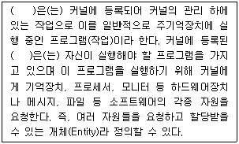
- 프로세스(Process)
- 운영체제(OS)
- 스케줄(Schedule)
- 스래드(Thread)
(정답률: 69%)
63. 다음 중 DRAM에 대한 설명으로 맞는 것은?
- 플립플롭 회로를 사용하여 만들어졌다.
- 모든 메모리 유형 중에서 가장 빠르다.
- 일반적으로 CPU의 레지스터나 캐시 메모리에만 사용된다.
- 저장된 데이터를 유지하기 위해 계속적으로 데이터를 새롭게 하는 것이 필요하다.
(정답률: 71%)
64. 디스크 시스템의 성능과 신뢰성을 향상시키기 위해서 디스크 드라이브의 배열을 구성하여 하나의 유니트로 패키지 함으로써 액세스 속도를 크게 향상시키고 신뢰도를 높인 것을 무엇이라 하는가?
- 자기 디스크 장치(magnetic disk unit)
- RAID(Redundant Array of Inexpensive Disks)
- 자기 테이프 장치(magnetic tape unit)
- 램 디스크 장치(RAM disk unit)
(정답률: 78%)
65. 다음 중 ASCII 코드에 대한 설명으로 옳지 않은 것은?
- 1비트의 Parity 비트를 추가하여 8비트로 사용한다.
- 1개의 문자를 4개의 Zone 비트와 3개의 Digit 비트로 표현한다.
- 128가지의 문자를 표현할 수 있다.
- 통신 제어용 및 마이크로컴퓨터의 기본코드로 사용한다.
(정답률: 66%)
66. 명령어의 주소 필드에 피연산자의 주소가 들어 있는 것이 아니고 실제 피연산자가 위치해 있는 유효 주소가 기억되어 있는 주소지정 방식은?
- 묵시적 주소지정 방식(implied addressing mode)
- 즉시 주소지정 방식(immediate addressing mode)
- 간접 번지 주소지정 방식(indirect addressing mode)
- 레지스터 간접 주소지정 방식(register indirect addressing mode)
(정답률: 68%)
67. 다음 중 오류 검출용 코드에 해당하는 코드는?
- BCD 코드
- Execess-3 코드
- 해밍 코드
- Gray 코드
(정답률: 84%)
68. 다음 중 운영체제의 역할에 해당하지 않은 것은?
- 사용자와 컴퓨터 시스템 간의 인터페이스 정의
- 여러 사용자 간의 자원 공유
- 자원의 효율적인 운영을 위한 스케줄링
- 데이터베이스의 관리
(정답률: 63%)
69. 제어장치(Control Unit)를 구성하는 요소라고 볼 수 없는 것은?
- 명령 레지스터(Instruction Register)
- DMA 제어기(DMA Controller)
- 명령 해독기(Instructin Decoder)
- 제어 메모리(Control Memory)
(정답률: 60%)
70. 인터넷에서 사용되는 용어 중에서 컴퓨터 사이에 파일을 전달하는데 사용되는 것은?
- FTP
- Gopher
- Archie
- Usenet
(정답률: 81%)
71. 다음은 전력유도로 인한 피해가 없도록 전송설비 및 선로설비의 전력유도 전압에 대한 방지조치 대상 제한치를 표기하였다. 잘못 연결된 것은?
- 상시 유도위험종전압 : 60[V]
- 기기 오동작 유도종전압 : 15[V]
- 이상시 유도위험전압 : 300[V]
- 잡음전압 : 0.5[mV]
(정답률: 73%)
72. 공동주택의 홈네트워크에 설치해야 하는 “원격제어기기”가 아닌 것은?
- 가스밸브제어기
- 조명제어기
- 난방제어기
- 전원제어기
(정답률: 77%)
73. 다음 중 방송통신위원회가 전기통신의 원활한 발전과 정보사회의 촉진을 위하여 수립하는 전기통신기본계획에 포함되는 사항이 아닌 것은?
- 전기통신의 이용효율화에 관한 사항
- 전기통신사업에 관한 사항
- 전기통신설비에 관한 사항
- 전기통신기자재 관리에 관한 사항
(정답률: 74%)
74. 다음 괄호 안에 들어갈 내용으로 적합한 것은?
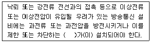
- 보호기
- 제한기
- 스위치
- 차단기
(정답률: 81%)
75. 다음 용어의 정의 중 옳지 않은 것은?
- “하도급”이라 함은 도급받은 공사의 전부에 대하여 수급인이 제3자와 체결하는 계약을 말한다.
- “수급인”이라 함은 발주자로부터 공사를 도급받은 공사업자를 말한다.
- “하수급인”이라 함은 수급인으로부터 공사를 하도급 받은 공사업자를 말한다.
- “용역”이라 함은 다른 사람의 위탁을 받아 공사에 관한 조사, 설계, 감리, 사업관리 및 유지관리 등의 역무를 수행하는 것을 말한다.
(정답률: 54%)
76. 정보통신공사에서 “설계도서”에 포함되지 않는 것은?
- 공사시방서
- 공사도급서
- 공사비명세서
- 공사설계도면
(정답률: 49%)
77. 기간통신사업자의 전기통신회선설비 등을 이용하여 기간통신역무를 제공하는 사업을 무엇이라 하는가?
- 통신역무사업
- 부가통신사업
- 회선설비사업
- 별정통신사업
(정답률: 60%)
78. 지능형 홈네트워크 설비에서 세대망과 단지망을 상호 접속하는 장치는?
- 단지서버
- 세대단자함
- 월패드
- 홈게이트웨이
(정답률: 77%)
79. 방송통신설비의 설계도서를 작성할 수 있는 자가 아닌 것은?
- 전파법에 의한 이동통신사업자
- 엔지니어링산업진흥법에 따른 통신부문의 엔지니어링사업자
- 정보통신공사업법에 의한 기술계 정보통신기술자
- 기술사법에 따른 통신분야 기술사
(정답률: 70%)
80. 전기통신설비를 이용하거나 전기통신설비와 컴퓨터 및 컴퓨터의 이용기술을 활용하여 정보를 수집ㆍ가공ㆍ저장ㆍ검색ㆍ송신 또는 수신하는 정보통신체제를 무엇이라 하는가?
- 정보전송설비
- 인터넷설비
- 정보통신망
- 컴퓨터통신망
(정답률: 83%)